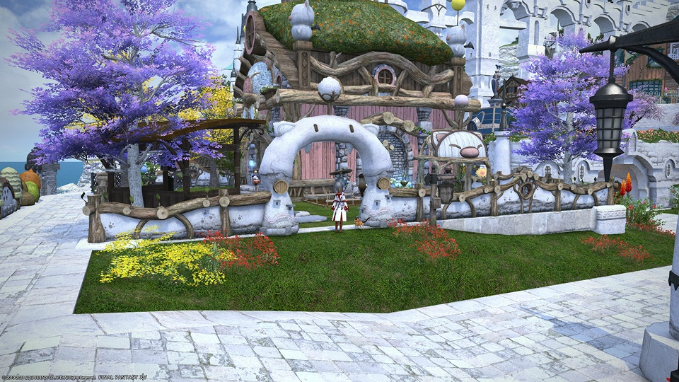
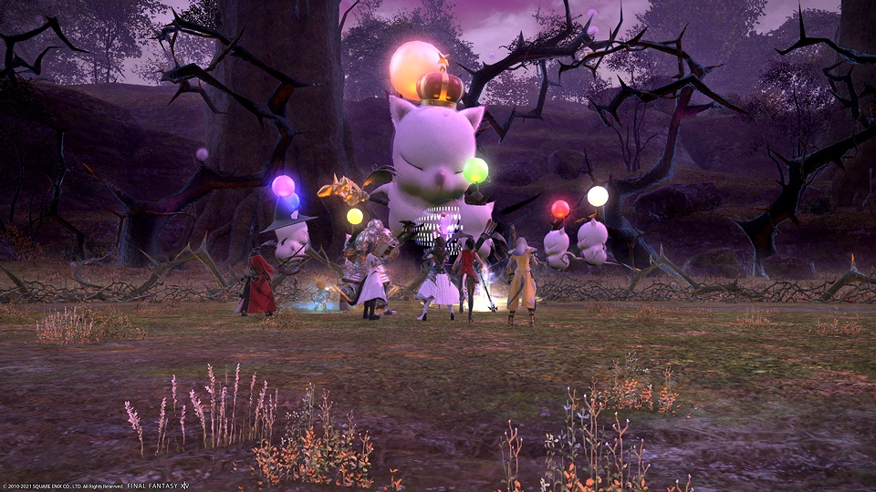
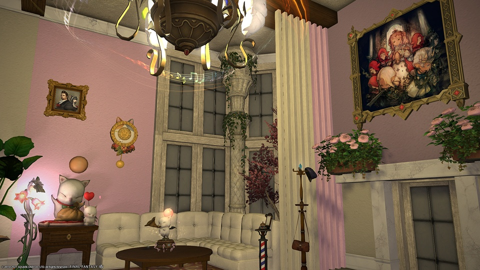
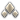
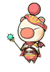

Kupo! Kupo!
Hello and Welcome to the Merry Moogles! (MeMo)
A young FC, but with a lot of heart! We hope to build a community for players that encompasses all aspects of the game. We are looking for players of all levels, skills and experience. Whether you are a Sprout, a Returner, or a Veteran, we want you as part of the family!
Currently, we love to run daily roulettes, mount farms, and treasure maps! We also have a small house in the Mists that our decorators can use to express their interior design skills.
Most of our members are active between 6pm and 12am EST, during the weekdays and a little later on the weekends. We do have a few members that are in different timezones as well. The one thing we can guarantee is a friendly, inclusive, responsive environment for new and veteran members alike.
The fastest way to join us is by jumping in our Discord! We have a whole area dedicated to the Merry Moogles FC! Come in and say hello! discord.gg/bemerry
Hello and Welcome to the Merry Moogles! (MeMo)
A young FC, but with a lot of heart! We hope to build a community for players that encompasses all aspects of the game. We are looking for players of all levels, skills and experience. Whether you are a Sprout, a Returner, or a Veteran, we want you as part of the family!
Currently, we love to run daily roulettes, mount farms, and treasure maps! We also have a small house in the Mists that our decorators can use to express their interior design skills.
Most of our members are active between 6pm and 12am EST, during the weekdays and a little later on the weekends. We do have a few members that are in different timezones as well. The one thing we can guarantee is a friendly, inclusive, responsive environment for new and veteran members alike.
The fastest way to join us is by jumping in our Discord! We have a whole area dedicated to the Merry Moogles FC! Come in and say hello! discord.gg/bemerry




Good Queen Mog
Creator and leader of the Merry Moogles.Mog Mod 
This is our moderator role. If you are playing FFIXV and are also a moderator in the MaericTV Community,
you most likely have this role.For any Merry Moogle in distress who needs to speak with a Mod, these are the moogles to send a message to. They will help you resolve any conflicts that arise.
Airship Manager
Airships and Submarines are very important to an FC. They allow us to gain valuable resources that fund our many community endeavors, including the purchase of a larger FC house. You are incredible at managing large quanitites of items and using the market boards to your advantage. You're great at making gil. Thank you for taking on this important role!Event Planner 
These generous souls run scheduled events. You lead raids, trials, and dungeons. You help keep everyone motivated and continually spread positivity while teaching some of the game's hardest content. Thank you for being the backbone of our FC.Mooglesguard
These are the helpers. Those who take an active hand in contributing to the free company with their time and energy. You don't have a weekly schedule like the Event Planners, but you put together many impromtu activities like roulettes, treasure maps, or mount farms. You help out and we appreciate you!
